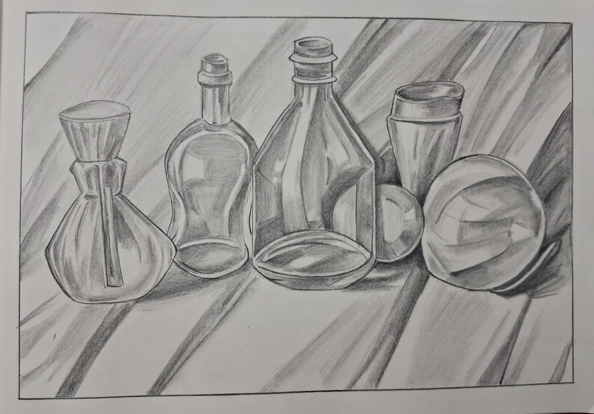

Overview
PENCIL SHADING is the foundation of realistic drawing. It involves using different grades of graphite pencils to create the illusion of three-dimensional form, depth, and light on a flat surface.
The Graphite Scale
Pencils are categorized by their hardness and darkness levels:
- H Pencils (Hard): Produce light, thin lines; ideal for initial technical sketches.
- B Pencils (Black/Soft): Produce dark, thick lines; perfect for deep shadows and blending.
- HB Pencils: The middle ground, used for general writing and basic sketching.
Shading Techniques
To achieve realistic textures, artists use these common methods:
- Blending: Using a blending stump or tissue to smooth out pencil strokes for a skin-like finish.
- Circulism: Drawing tiny overlapping circles to build up dark tones without visible lines.
- Rendering: Using an eraser to "draw" highlights back into dark areas for a 3D effect.
